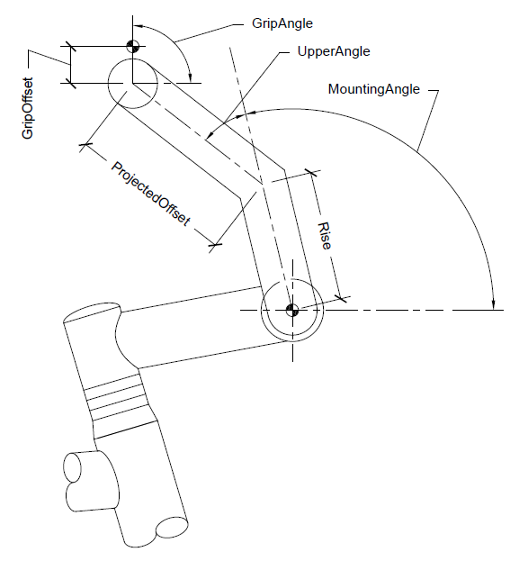
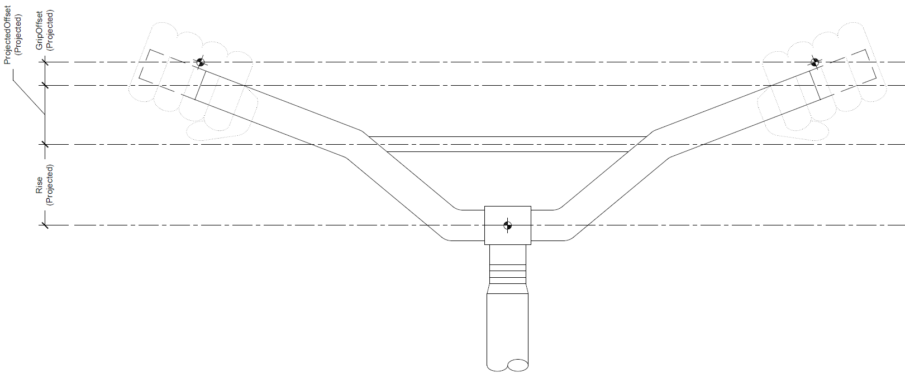

The riser bar is designed to emulate any handlebar with two sections. There is only one hand placement provided with the riser bar. The hand placement is a projection of the grip on the bar. A front view is provided for reference.
 This is mounting angle of the bar.
This is the projected length of the first bar segment.
This is the angle the bar bends for the second bar segment.
This is the projected offset of the second bar segement.
This is distance from the center of the bar to the grasping point at the palm of the hand.
This is angle the hand is placed at when gripping the bar. The grip can be rotated around the bar. The angle is calcualted from the horizontal and mouting nagle does not effect it.